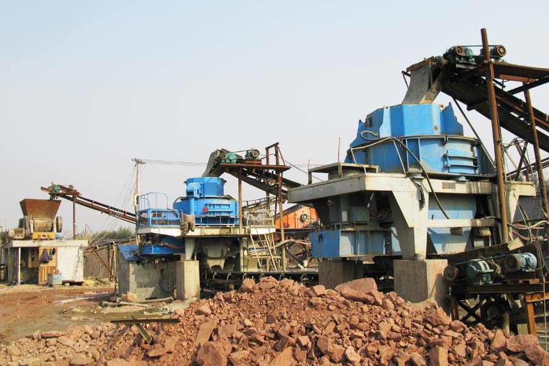

Construction waste crushing production line

Mobile construction waste crushing station for urban construction waste crushing.
quartz processing plant India
where the sale of quartz sand maker in Pakistan?Quartz is the important mineral resources, physical and chemical properties are very stable, due to the formation of different geographical conditions, may show different colors, quartz stone has now become an important building decoration materials, along with the development of technology, production changes, quartz is also widely used in chemical, pharmaceutical and other, play a more important role. After the quartz sand is mainly responsible for the appearance of quartz trimming, typically used for crushing process, because only the shape of the quartz crushing stone broken into small particles, and there is no corresponding trim its shape, in order to meet the high standards in the field of material needs, the need for conduct of quartz sand shaping.

With the extensive application of quartz, quartz sand is also more and more people are familiar with, the market is really on a very large number of quartz sand brand, if you want to get better production results, We first need to choose the right manufacturers, selected equipment. Henan is a major agricultural province, has become a major industrial province, say quartz sand factory, Henan domestic production of quartz stone is definitely an important gathering place for manufacturers, many of which started very early, influential manufacturers, CAG is a kind of a company.
CAG nearly three decades in the production of large-scale mining equipment, located in Zhengzhou, Henan Province, the company has mining crushing equipment, sand sand equipment, mineral processing equipment, mineral grinding equipment, drying equipment and other mineral mining equipment, the company also It has introduced from abroad a number of advanced production lines, especially sand production line, absolutely world-class level of production. Quartz sand used is a nickel-chromium alloy wear-resistant parts, can greatly enhance the service life of wearing parts, quartz sand spindle uses a unique process, with more load capacity, crushing material used inside the chamber Since the lining, can greatly reduce the impact of material influence on the equipment, reduce equipment failure. Quartz sand production company, whether in the design, or in terms of performance basis, definitely make customer satisfaction, if you're interested in the company's equipment online contact our customer service staff, the company also sincerely welcome you to our production base for sightseeing!
Leave Me A Message, Now
If you have any questions regarding equipment prices, production line configuration or other problems, you can send a message to us, we will contact you soon.